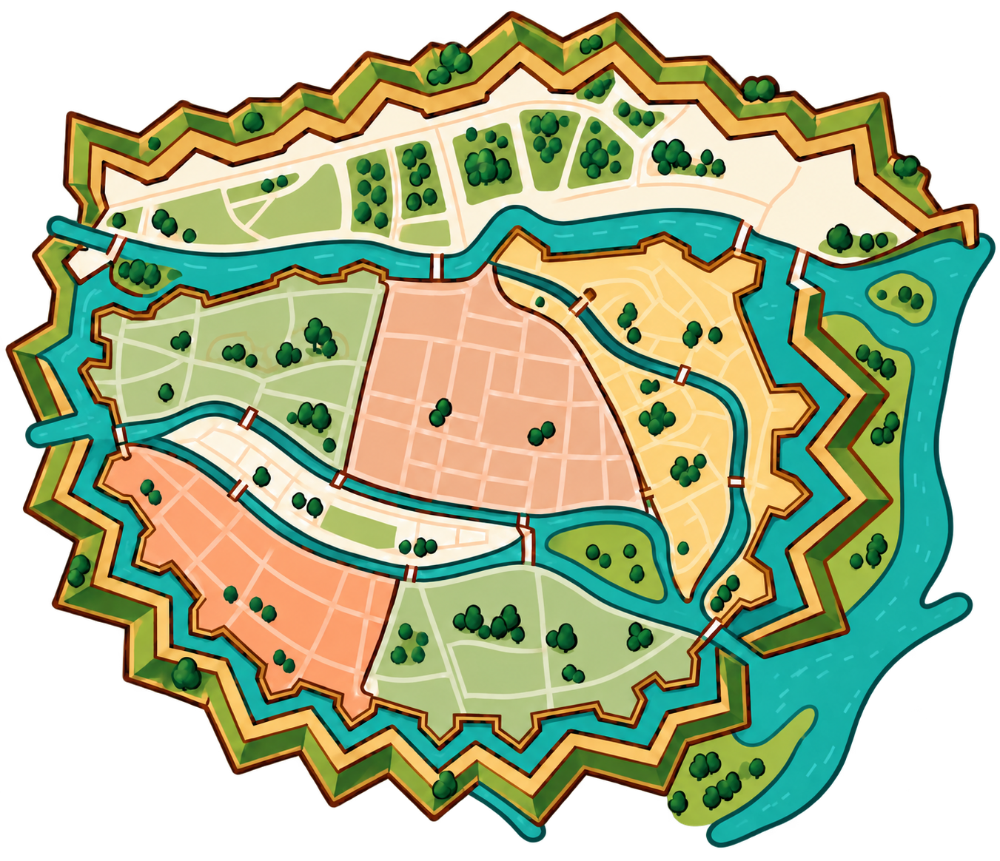

<!doctype html>
<html lang="be">
<meta charset="utf-8">
<meta name="viewport" content="width=device-width,initial-scale=1">
<title>MAP-02 — праверка празрыстага асета</title>
<style>
body{margin:0;padding:24px;background:#faf7f2;color:#22262b;font:14px/1.5 system-ui,sans-serif}
main{max-width:920px;margin:auto;display:grid;grid-template-columns:1fr 1fr;gap:24px}
figure{margin:0}figcaption{padding:8px 0}.sample{padding:12px;min-height:400px;display:flex;align-items:center;justify-content:center}
.checker{background:repeating-conic-gradient(#e0e0e0 0% 25%,#fff 0% 50%) 50%/20px 20px}.dark{background:#253a32}
img{display:block;width:100%;height:auto;max-width:420px}.small{grid-column:1/-1}.small img{width:240px}
@media(max-width:650px){main{grid-template-columns:1fr}.small{grid-column:auto}.sample{min-height:0}}
</style>
<main>
<figure><div class="sample checker"></div><figcaption>PNG v2: празрыстасць і плаўныя выхады рэк</figcaption></figure>
<figure><div class="sample dark"></div><figcaption>SVG v2: той самы асет на цёмным фоне</figcaption></figure>
<figure class="small"><figcaption>Памяншэнне да 240 px; гэта праверка асета, не экран дадатку.</figcaption></figure>
</main>
</html>
